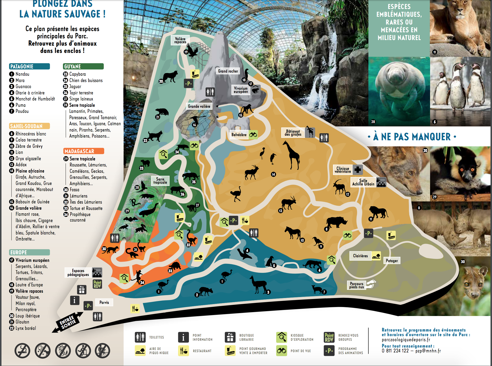

<<<<<<< HEAD
=======
>>>>>>> a38a08c4dd40e390cd12e423a64ab5d2bba1641c
<<<<<<< HEAD
=======
>>>>>>> a38a08c4dd40e390cd12e423a64ab5d2bba1641c
Le dôme de madagascar
La biozone Madagascar comprend deux écosystèmes représentatifs de l’île : la forêt tropicale humide et la forêt tropicale sèche.
Madagascar est la quatrième plus grande île de la Planète. Son taux d’endémisme, 80 %, est exceptionnel, mais beaucoup d’espèces malgaches sont menacées. Aussi, depuis de nombreuses années, le Parc Zoologique de Paris s’investit dans des programmes de conservation in situ.
La Forêt tropicale humide
La forêt tropicale humide, située dans la Grande Serre, est peuplée d’oiseaux colorés, tels que les inséparables à tête grise (Agapornis canus) et le pigeon de Madagascar (Nesoenas picturata), et de lémuriens, dont le plus menacé d’entre eux, le grand hapalémur (Prolemur simus). À l’extérieur de la serre, d'autres lémuriens parcourent librement les îles de la biozone tandis que le fossa (Cryptoprocta ferox), le plus grand carnivore malgache, évolue dans une végétation dense aussi peuplée d'un groupe de roussettes.
La Forêt tropical sèche
Plus loin, au détour d'une butte, se dévoile la forêt sèche malgache. Dans un vallon couvert d’une végétation clairsemée constituée de plantes rases, de graminées et d’arbrisseaux épineux, elle abrite la tortue rayonnée (Astrochelys radiata) et le propithèque couronné (Propithecus coronatus), lémurien emblématique de Madagascar et aussi du Parc Zoologique de Paris.
- Le temps de visites est de 2 heures minimum.
- Sa superficie est de 15 hectares
- Le nombre espèces différentes dans ce zoo est de 125
- Le nombre d'animaux est de 3000 au total
La carte du Parc
Le classement des activités favoris à visités dans Paris d'après TripAdvisor
| Classement | Nom du zoo | Nombre de visiteurs | Nombre d'avis | Le nombre d'avis positif |
|---|---|---|---|---|
| 1 | Jardin des Plantes | 2 308 625 | 1790 | 1549 |
| 2 | Aquarium Tropical de Porte Dorée | 525 594 | 328 | 279 |
| 3 | Parc Zoologique de Paris | 702 292 | 2325 | 1191 |
| 4 | La ménagerie du Jardin des Plantes | 2.3 000 000 | 630 | 361 |
| 5 | Aquarium de Paris -CinéAqua | 700 000 | 1567 | 609 |